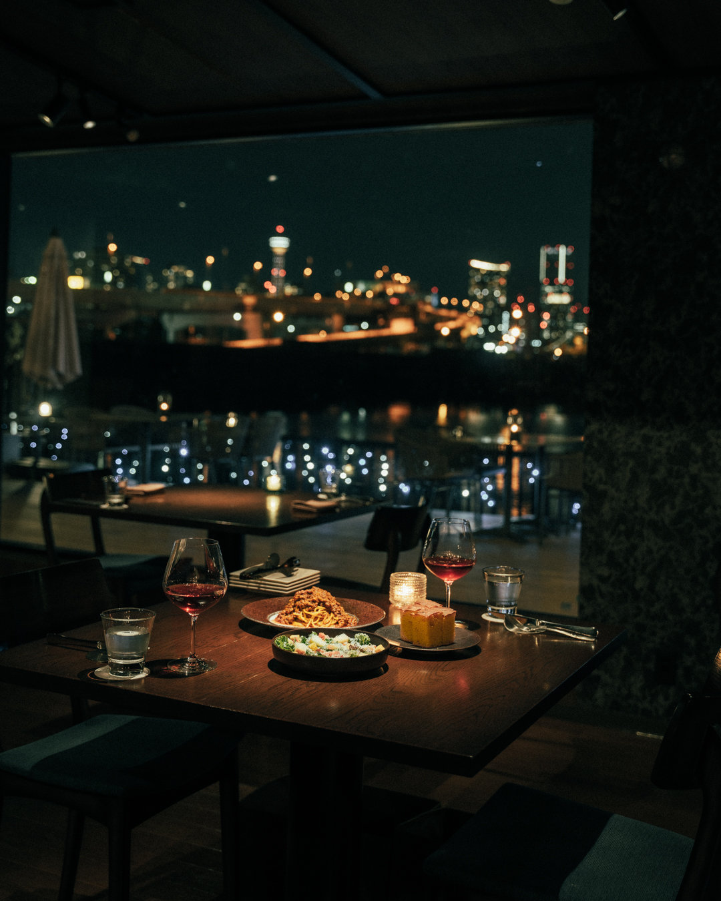
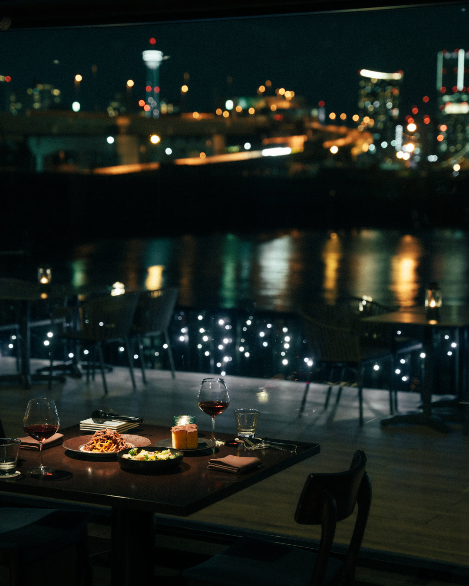
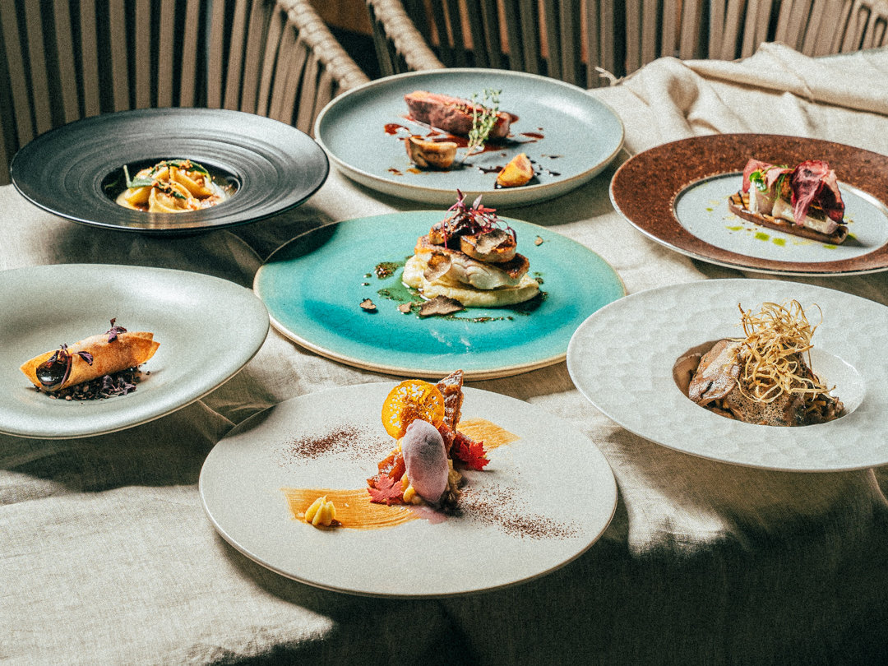
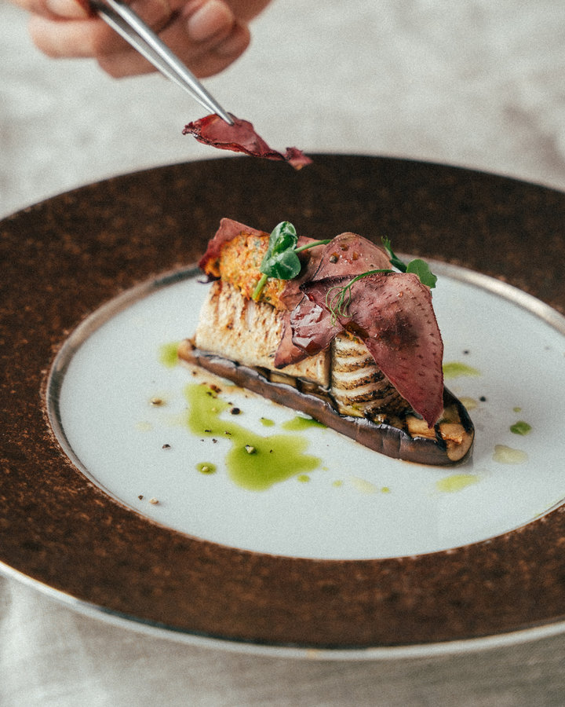
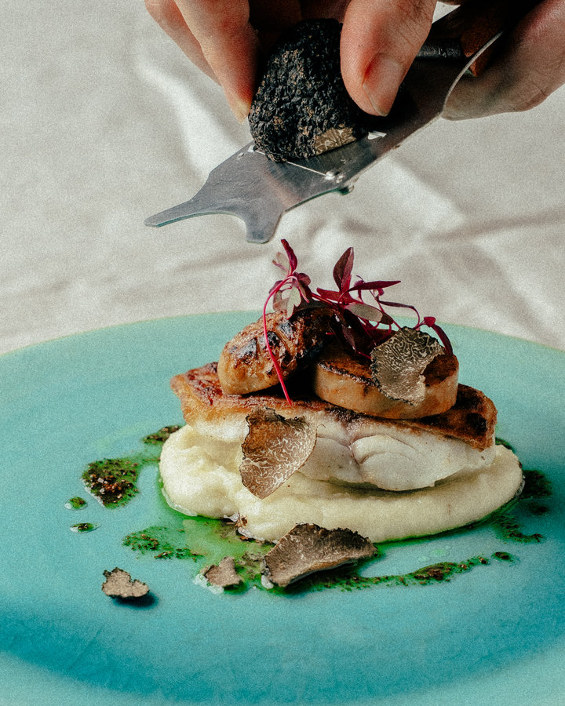
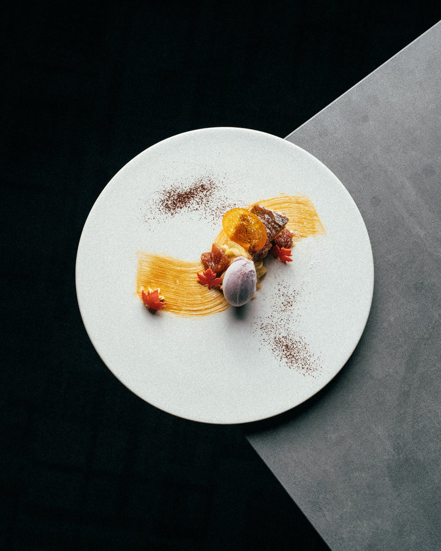
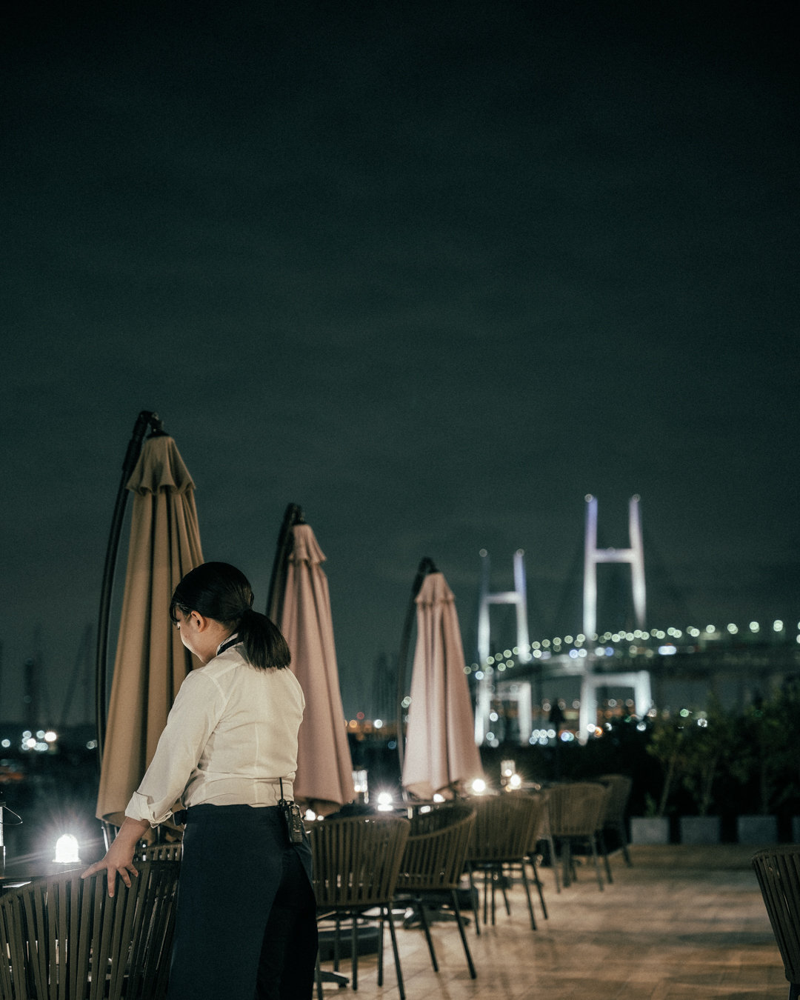

Message Dolce Plate
メッセージドルチェプレート
¥2,000
税込・サービス料別
- お席またはコースのご予約と一緒にお申し込みください。プレートのみのご予約はできません。
- 1回のご予約につき、1つまでです。
- ランチ・ディナーのどちらでもお選びいただけます。

横浜・新山下
ANNIVERSARY DINNER
横浜・新山下の海沿いに佇む Re : Journal。海に街の灯が溶けこむみなとみらいの夜景を眺めながら、シェフの感性が織りなすディナーコースで、大切な人との記念日を。
Chef's Seasonal Selection – Dinner（全8品）
税込・サービス料別。メッセージドルチェプレートとお祝いの花束は、予約ページのオプションから追加できます。
記念日のディナーを予約するWebとお電話でご予約受付中
Concept
横浜・新山下の海沿いに佇む、“海辺の隠れ家”レストラン Re : Journal。夜は水辺に幻想的な灯りがともり、みなとみらいの街の灯が海に溶けこみます。ライブ感あるオープンキッチンから届く本格イタリアンと、厳選ワイン。デートに会食、そして記念日に。“大切な人”と過ごす、大人のための空間です。

Celebration
お祝いには、メッセージドルチェプレートとお祝いの花束をご用意しています。どちらもランチ・ディナーでお選びいただけます。予約ページの「オプション」から、お席やコースと一緒に追加してください。
Message Dolce Plate
¥2,000
税込・サービス料別
Celebration Bouquet
¥5,000
税込・サービス料別
食事の結びに、もうひとつのサプライズ。ただの“美味しい”じゃ終わらせない夜へ。
お祝いの花束は、2日前までのご予約が必要です。
Dinner Course
みなとみらいの夜景を眺めながら、シェフの感性が織りなすコースを。料金はすべて、税込・サービス料別です。

Dinner Course
お一人様・税込・サービス料別
みなとみらいの夜景を眺めながら楽しむ、シェフの感性が織りなすディナーコース。一皿ごとに素材の持ち味を引き出し、香り・彩り・温度のバランスで構成しています。魚介と肉料理のメインを中心に、前菜からデザートまで、季節の流れをゆるやかに。食後はコーヒーや紅茶とともに、ゆっくりと余韻をお楽しみください。
Chef's Seasonal Selection – Dinner
お一人様・税込・サービス料別
季節を束ねて、感謝を一皿に。秋の味覚と花々で彩る、ありがとうを伝える特別なコースです。
Omakase
¥20,000
お一人様・税込・サービス料別
シェフがその日、食材の最高潮の状態にあるものだけで仕立てる、Re : Journal の最高峰のコース。お品書きも決まった構成もない、完全シークレットの「お任せ」です。波音を背景に、五感のすべてを研ぎ澄ませて。




写真はすべて2026年秋のコースより。内容は季節で変わります。
コースとオプションは、予約ページでお選びいただけます。
Seats
予約ページでは、カウンター席・窓際テーブル席・メインホールから、お席のカテゴリをお選びいただけます。窓の向こうに夜の海とみなとみらいの灯りが広がる窓際テーブル席は、記念日にもおすすめです。お席の指定は、ご要望に添えない場合もあります。
テラス席は、通常のお席のご予約とは別枠です。事前のご予約はできず、当日10:30から先着順にお電話で受け付け、天候次第でご案内します。店内をご予約のお客様も、当日のお電話でテラス席への移動をご相談いただけます。
食後のBAR利用もおすすめです。美酒や絶品のコーヒーとともに、記念日の夜の余韻をゆっくりと。

Voices
記念日にランチで行かせてもらいました。アニバーサリープレートをとてもさり気なく出してくれ、パートナーもとても楽しみよろこんでました。窓際席からの景色もサイコーでした。料理もすべてが上品な味と飾り付けでよかったです。
新山下町にある隠れ家レストランです。結婚記念日で利用させて頂きました。記念日で利用するにふさわしい特別感のある店内雰囲気で、窓際に座ればみなとみらいの夜景で見えます。料理はもちろん絶品です。
店の雰囲気、店から見える景色、味も非常に良かったです。……席の担当の男性（お名前忘れてしまった）が本当にさりげなく、でも一流のもてなしを提供してくださって感動しました。今回誕生日にこの店を使わせていただきましたが、最高でした。何かお祝い事や記念日にはまたこのお店を使いたいと思います。
Google マップに投稿された口コミから一部を抜粋しています（2026年11月時点。省略箇所は……で示しています）。お席の場所のご指定は、ご要望に添えない場合もあります。
| ご来店日の2日前 | コース料金の50% |
|---|---|
| 前日・当日 | コース料金の100% |
| 前日 | ランチ ¥1,000 ディナー ¥3,000 |
|---|---|
| 当日 | ランチ ¥2,000 ディナー ¥6,000 |
ご連絡のないキャンセルは、想定客単価の100%を申し受ける場合があります。
Before booking
Access
FAQ
2日前までのご予約が必要です。予約ページの「オプション」から、お席やコースと一緒に追加してください。当日の追加をご希望の場合は、店舗へ直接お問い合わせください。
プレートのみのご予約はできません。お席またはコースのご予約と一緒にお申し込みください。1回のご予約につき1つまでです。
予約ページで「窓際テーブル席」のカテゴリをお選びいただけます。ただし、お席の指定はご要望に添えない場合もあります。
テラス席は通常のお席のご予約とは別枠で、事前のご予約はできません。当日10:30から先着順にお電話で受け付け、天候次第でご案内します。店内をご予約のお客様も、当日のお電話でテラス席への移動をご相談いただけます。
はい。ランチには Chef's Seasonal Selection – Lunch（平日 ¥6,000／土日祝 ¥7,000、税込・サービス料別）があり、自家製フォカッチャを含む全6品で、はじまりの一杯にスパークリングワイン（アルコール・ノンアルコールから）が付きます。メッセージドルチェプレートとお祝いの花束も、ランチでお申し込みいただけます。ランチの営業は 11:30〜15:00（L.O. 14:00）です。
コースのご予約は、ご来店日の2日前でコース料金の50%、前日・当日は100%を申し受けます。お席のみのご予約は、お一人様あたり前日がランチ ¥1,000・ディナー ¥3,000、当日がランチ ¥2,000・ディナー ¥6,000 です。
掲載の料金はすべて税込で、サービス料は別です。
Reservation
記念日のディナーは、Webとお電話でご予約いただけます。
＊お祝いの花束は、2日前までのご予約が必要です。
＊キャンセル料は、コースのご予約でご来店日の2日前がコース料金の50%、前日・当日は100%です。
＊お電話の受付は10:30からです。